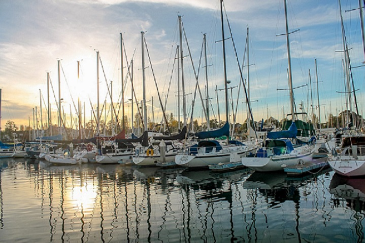
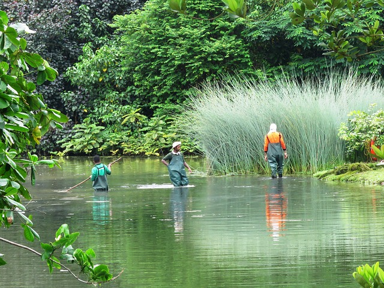
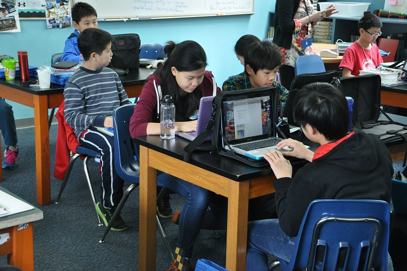
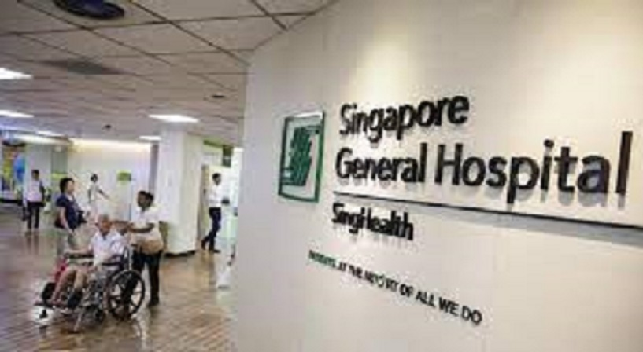
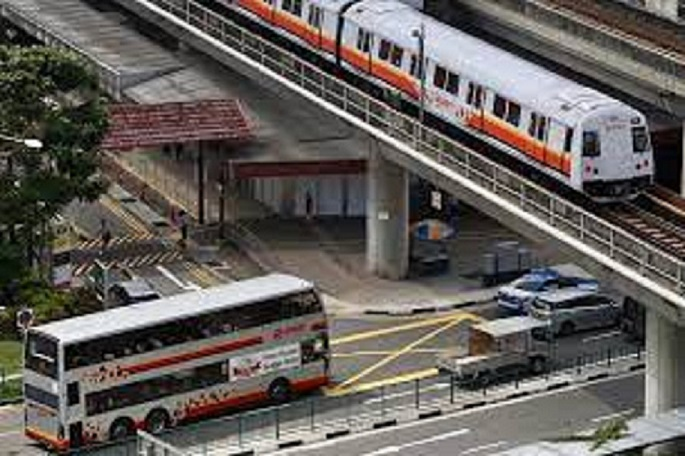

Economic Environment
Singapore boasts a competitive, corruption-free, open business environment. The Port of Singapore is one of the busiest in the world as the city
focuses on electronics and chemical exports to richer industrialised nations. However, over the years, Singapore has diversified its economy and
today it has become a research and development (R&D) hub, bio-medical hub, banking and finance centre and in recent times the health-care
destination of Asia. Today, Singapore is a knowledge-based economy and attracts multinational investments. Its open trade policies, social
stability, world-class infrastructure and international communication links, are some of the reasons why foreign investors flock its shores.
This is despite the fact that land and labour costs have risen sharply and employers have to pay a sizable portion of their employees’ salary to
their Central Provident Fund.The World Economic Forum positions Singapore’s economy as one of the most open in the world. The country is also known
for its low tax regime. In Singapore, personal income tax rates start from 0% and capped at 22% for residents while non-residents are taxed between
15% and 22%. The corporate income tax rate in Singapore is approximately 8.5% for profits up to S$300,000 and a flat 17% above S$300,000. The GST or
VAT rate is at 7%. Furthermore, there is no dividend tax, no estate duty, and no capital gains tax.According to a report by financial advisory firm,
Ernst & Young and the Japan External Trade Organisation, Singapore was found to be one of Asia’s best investment destinations for foreign firms.
It has benefited from these firms, as they bring in capital, technology, management know-how and access to international export markets. Singapore has
also realised the need to enhance its manpower and encourages top foreign talent to re-locate here. Hence the labour force is highly educated, competent
and skilled.

Socio-Cultural Environment
The social and ethnic fabric of Singapore is a unique mix of cultures and people, including Malays, Chinese, Indians, and expats from
many nations. Singapore's lifestyle is multi-cultural, with each ethnic group keeping its own distinct way of life while coexisting
peacefully. Because to the recent influx of foreigners, Singapore's society is cosmopolitan.
The people are friendly and kind to one another. The need of social and racial harmony is emphasized. To develop a distinct Singapore
identity, the Singapore government has established five basic ‘Shared Vales': nation before community and society above self; family as
the basic unit of society; community support and respect for the individual; consensus rather than conflict; racial and religious harmony.
Political and Social Environment

Singapore is known for its stable political climate. Despite being considered centralised and authoritarian, the political culture is pragmatic,
rational and based on the rule of law. The highest goal of the government is the survival and prosperity of this small nation. This often means,
having to make unpopular but hard and wise decisions in the interest of the nation. The government believes in being pro-active and thinking for
the future.
According to Singapore’s founding father Lee Kuan Yew, Singapore has been able to attract some 9000 multi-national companies, because it offers
First World conditions in a Third World region. Good governance is having a good system that will ensure the country survives, so that citizens
have secure lives.
Due to Singapore's geographical location, it is generally free from the danger of natural disasters. However, the weather can be humid all year
round, and wet towards the last few months of the calendar year.
Recreation
Dining and shopping are the two most popular activities in Singapore. Most expatriates feel the lack of adequate recreational
options and resort to exploring nearby places in Malaysia (Langkawi, Tioman, Genting etc.) and Indonesia (Bintan, Batam, Bali etc.)
over the weekend. Singapore does have a vibrant night life and there are several bars and night clubs that are frequented by patrons.
The cinema is another option that rates high on popularity. There are art festivals, plays, music concerts, cultural performances etc.
,but these options are seasonal and could be expensive.
Education In Singapore
Singapore places great emphasis on education. The education system arms individuals with the necessary skills and knowledge to survive in
a globally competitive environment. Singapore’s public schools have high standards of teaching and learning, with many of its students
winning International competitions. Apart from the 3 internationally renowned local Universities – National University of Singapore, Nanyang
Technological University and Singapore Management University – Singapore houses several internationally renowned world-class institutions like
INSEAD, University of Chicago Graduate School of Business and United World College to name a few. The country has taken cognizance of a
growing expat community and set up many International Schools and Foreign System Schools (FSS). These schools are registered with the Ministry
of Education and follow a curriculum identical to those in their home country. The fees per year range from S$12,000 to S$48,000.

Healthcare In Singapore
Singapore’s population enjoys one of the highest levels of health and nutrition in Asia. The country is also renowned for its world-class health
infrastructure, technological advancements in the healthcare industry, expert doctors and specialists. The healthcare environment is clean,
efficient and safe. Singapore has adopted a public-private partnership in healthcare financing. Central to this system is the ‘Medisave’, where
every working resident has to make a mandatory monthly contribution to the Medisave portion of his Central Provident Fund account. This can then
be used for payment of medical expenses. The government on its part provides good, affordable health-care and subsidised medical services to the
needy, at public hospitals and clinics. Apart from registered pharmacies, pharmaceuticals are easily available in super-markets, shopping centres
and departmental stores. Drugs are safe for consumption and have a high standard of quality. All medical practitioners are registered with
relevant bodies.
Singapore promotes a clean and green environment. It encourages a healthy lifestyle and diet and cleanliness and hygiene are imbibed in its system.
The National Environment Agency conducts regular checks all over the island for instances of mosquito breeding and imposes heavy fines at breeding
sites. Steps like these have played a vital role in trying to contain the spread of diseases like chikungunya and dengue. According to the World
Health Organization 2010 ranking on the World's 100 Best Health Systems, Singapore was ranked 6th out of 100 countries.

Public Services and Transportation
Singapore is acutely aware of the need to have clean water, clean energy, clean air, managing traffic congestion, water conservation,
reliable energy supply and good urban planning. Over the past few years, the government has focused efforts on building Singapore as
a ‘Garden City’ (addition of greenery and create a garden effect), with good urban planning and pollution control as key considerations.
Today the city is clean and green and relatively free of traffic congestion. Residents have access to well planned parks and nature reserves.
The nation’s clean water bodies provide reliable water supply and opportunities for sports and recreation.
According to the National Environment Agency, Singapore enjoys better air quality than many cities in Asia and its Pollutant Standard Index
(PSI) has remained in the 'Good' and 'Moderate' range for much of 2017. In recognition of the progress and achievement that Singapore has made
in integrated water resources management, the national water agency, Public Utilities Board, was awarded the prestigious Stockholm Industry Water
Award in 2007. Singapore also has bans placed on smoking in public places.
Singapore boasts of a highly efficient, hassle-free and affordable public transportation system, which includes taxis, buses and the Mass Rapid
Transport (MRT) rail system. These modes of transport are air-conditioned and operate from 5:30 am until 12 mid-night and link the entire city.
They are safe, clean and efficient. Bus and rail fares are affordable, costing anything between S$0.70 to S$2.50 per trip. Taxis are plentiful
and relatively cheap compared to the Western world. Taxis are reliable and drivers do not fleece customers or demand even a cent more than the
metered fare.
In order to curb traffic congestion, the government has introduced a Electronic Road Pricing (ERP) system. This means that you have to pay a
minimum fee when you use certain congested roads and expressways in the CBD. Owning a car can be extremely expensive in Singapore, costing
anywhere between S$100,000-S$200,000, excluding registration, insurance and tax costs. Leasing a vehicle is a cheaper alternative.
